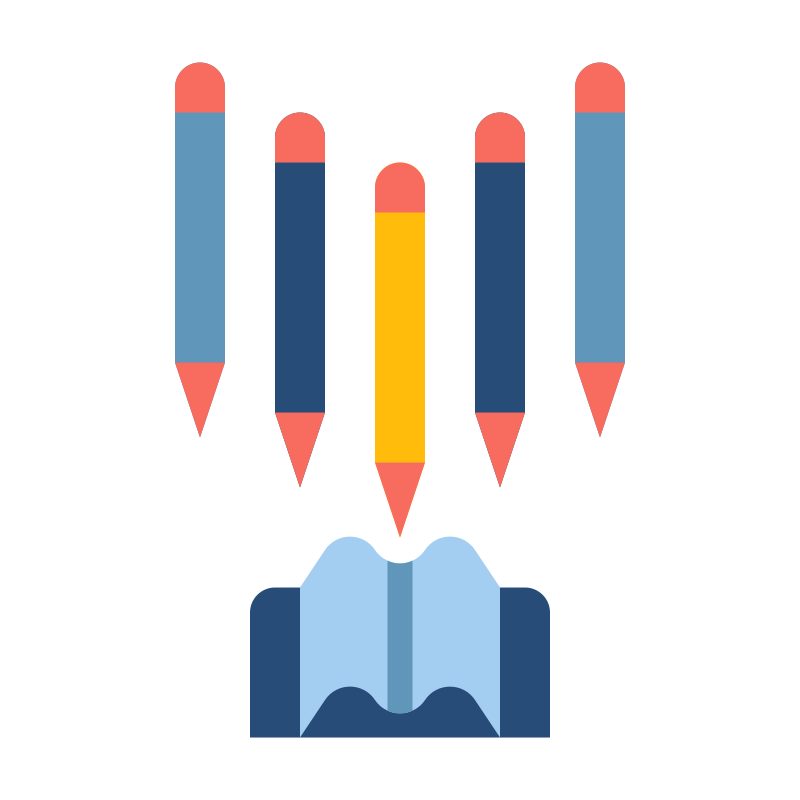

<ion-header>
  <div class="language-selector">
    <app-language-selector [preferredUserLanguages]="preferredUserLanguages"></app-language-selector>
  </div>
  <ion-button routerLink="./review" color="secondary">{{'lessons.reviewWords' | translate}}</ion-button>
</ion-header>

<ion-content>
  <div class="main-container">

    <div class="lessons-div">
      @for (lesson of lessons; track $index) {
      <div class="lesson-container" [class.even]="$index % 2 === 0" [class.odd]="$index % 2 !== 0">
        <div class="line" *ngIf="$index !== 0"></div>
        
        <div class="lesson" routerLink="./1">
          <!-- TODO: REPLACE WITH COMMENTED CODE -->
          <!-- routerLink="./{{lesson.idLesson}}" -->
          {{lesson.lessonName}}
        </div>
      </div>
      }
    </div>

  </div>
</ion-content>

<!-- <ion-button routerLink="./all-lessons" expand="block">See all lessons</ion-button> -->